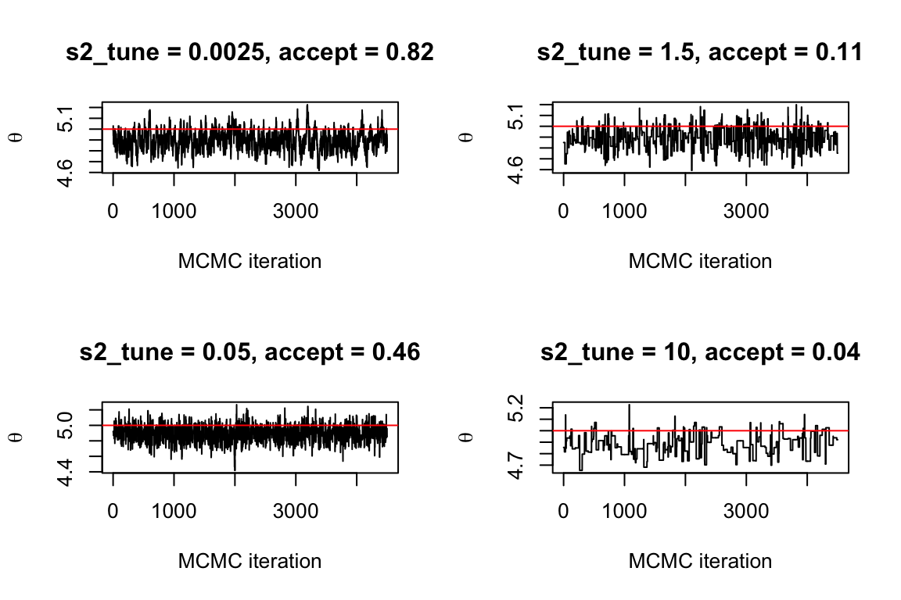
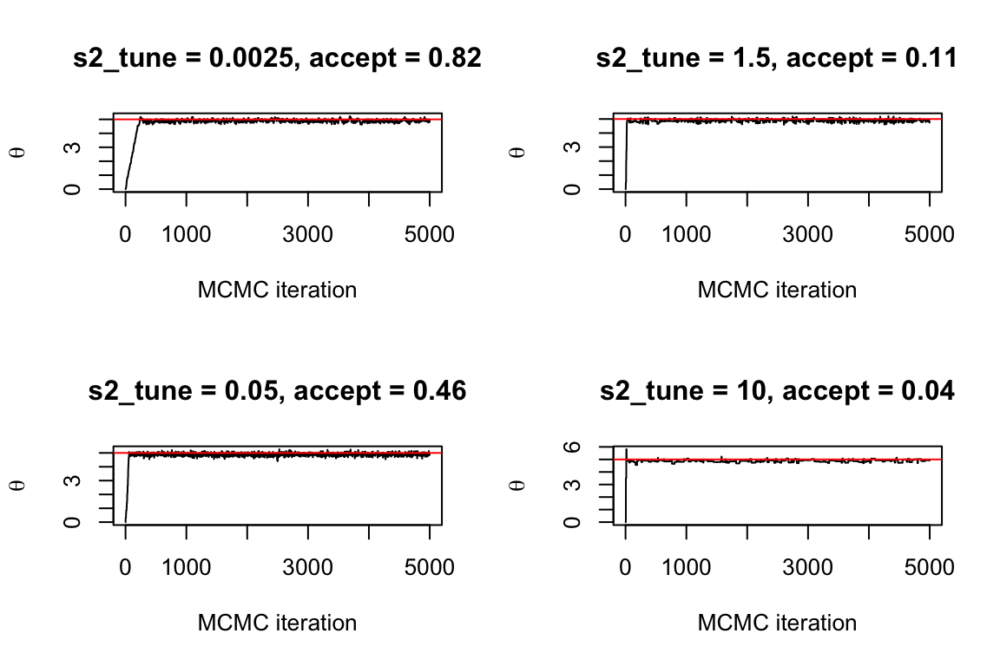

13 Day 13
13.1 Announcements
13.2 The Metropolis Algorithm
Previously we discussed how to sample from a Bayesian Hierarchical model when the conditional posterior distributions are known analytic distributions. Often, the conditional posterior distribution is not available in closed form. There are numerous methods to sample from the conditional posterior in this setting, including importance sampling, slice sampling, and hybrid/Hamiltonian sampling, among others. Today we will introduce the Metropolis algorithm, one of the most widely used and most effective methods for sampling from a conditional posterior without an analytically known distribution.
Recall the algorithm for the Gibbs sampler: The Metropolis algorithm requires two components: the full conditional distribution (known up to a proportionality constant) and a proposal distribution \([ \theta^\star]\) that generates possible values \(\theta^{\star}\) for the Markov chain given the value \(\theta^{(k-1)}\) of the parameter at iteration \(k-1\). The algorithm is13.3 The proposal distribution
The proposal distribution can either be independent of the current state of the Markov chain \([ \theta^\star]\) or dependent on the current state \([ \theta^\star | \theta^{(k-1)} ]\). Dependent proposal distributions are the most common, with the random walk proposal the most commonly used proposal.
The random walk proposal distribution \([ \theta^\star | \theta^{(k-1)} ]\) is \[\begin{align*} \theta^{\star} & \sim \operatorname{N} (\theta^{(k-1)}, \sigma^2_{\mbox{tune}}), \end{align*}\] where the mean of the random walk is the previous value of the parameter \(\theta^{(k-1)}\) and the variance \(\sigma^2_{\mbox{tune}}\) is a tuning parameter that is chosen to “tune” the performance of the MCMC sampler. A small choice of \(\sigma^2_{\mbox{tune}}\) will increase the acceptance rate of the Metropolis sampler because the proposed value will be relatively “close” to the previously accepted value \(\theta^{(k-1)}\) while a larger \(\sigma^2_{\mbox{tune}}\) will allow the Markov chain to make bigger transitions and explore the range of the posterior distribution. Hence, there is a balance between generating proposals that will be accepted relative to faster exploration of the range of the posterior.
A very important property of the proposal distribution is symmetry. A proposal distribution is symmetric if \([ \theta^\star | \theta^{(k-1)} ] = [ \theta^{(k-1)} | \theta^\star ]\) which means that the conditional probability of \(\theta^{\star}\) given \(\theta^{(k-1)}\) is equal to the conditional probability of \(\theta^{(k-1)}\) given \(\theta^{\star}\). The random walk distribution is a symmetric proposal but a log-normal random walk is not symmetric.
theta_k <- 5
theta_star <- 6
sigma2_tune <- 0.5
## check the symmetry condition for the random walk
all.equal(dnorm(theta_k, theta_star, sqrt(sigma2_tune)),
dnorm(theta_star, theta_k, sqrt(sigma2_tune)))## [1] TRUE## check the symmetry condition for the log-normal random walk
all.equal(dlnorm(log(theta_k), log(theta_star), sqrt(sigma2_tune)),
dlnorm(log(theta_star), log(theta_k), sqrt(sigma2_tune)))## [1] "Mean relative difference: 0.7701"library(latex2exp)
par(mar = c(5,5,2.75,2.75) + 0.1)
layout(matrix(1:4, 2, 2))
## normal proposal
curve(dnorm(x, theta_k, sqrt(sigma2_tune)), from=2, to=8,
main="Normal Proposal",
ylab = expression(paste("[", theta^(k-1), "|", theta^{"*"}, "]")),
xlab = expression(paste(theta^{"*"})))
abline(v=theta_k, lty=2)
text(5.65, 0.575, expression(theta^{(k-1)}))
## reverse of normal proposal
curve(dnorm(theta_star, x, sqrt(sigma2_tune)), from=3, to=9,
main="Reverse of Normal Proposal",
ylab = expression(paste("[", theta^{"*"}, "|", theta^{(k-1)}, "]")),
xlab = expression(paste(theta^{(k-1)})))
abline(v=theta_star, lty=2)
text(6.35, 0.575, expression(theta^{"*"}))
## log-Normal proposal
curve(dlnorm(x, log(theta_k), sqrt(sigma2_tune)), from=1, to=10,
main="log-Normal Proposal",
ylab = expression(paste("[", theta^(k-1), "|", theta^{"*"}, "]")),
xlab = expression(paste(theta^{"*"})))
abline(v=theta_k, lty=2)
text(5.75, 0.14, expression(theta^{(k)}))
## reverse of log-Normal proposal
curve(dlnorm(theta_star, x, sqrt(sigma2_tune)), from=-2, to=4,
main="Reverse of log-Normal Proposal",
ylab = expression(paste("[", theta^{"*"}, "|", theta^{(k-1)}, "]")),
xlab = expression(paste(log(theta^{(k-1)}))))
abline(v=log(theta_star), lty=2)
text(0.75, 0.095, expression(log(theta^{"*"})))
Note that the bottom right figure shows a symmetric looking distribution. Symmetry only implies that the conditional probabilities can be interchanged, not that the probability distribution is itself symmetric. The two most commonly used proposal distributions, the normal and the uniform distribution, are symmetric.
13.4 The Metropolis update
The Metropolis update is only valid for symmetric proposal distributions. The more general Metropolis-Hastings update is used for assymetric proposal distributions and will be introduced later.
If the value of \(\theta\) at iteration \(k-1\) is \(\theta^{(k-1)}\), then the conditional density for \(\theta\) is \[\begin{align*} [ \theta^{(k-1)} | \cdot ] & = \frac{[\mathbf{y} | \theta^{(k-1)}] [\theta^{(k-1)}]}{[ \mathbf{y} ]}, \end{align*}\] and the conditional density of the proposed value \(\theta^{\star}\) is \[\begin{align*} [ \theta^{\star} | \cdot ] & = \frac{[\mathbf{y} | \theta^{\star}] [\theta^{\star}]}{[\mathbf{y}]}, \end{align*}\] where both of these expressions require the difficult evaluation of the marginal data distribution \([\mathbf{y}]\). However, the ratio \(a\) of the two distributions \[\begin{align*} a & = \frac{[ \theta^{\star} | \cdot ]}{[ \theta^{(k-1)} | \cdot ]} \\ a & = \frac{\frac{[\mathbf{y} | \theta^{\star}] [\theta^{\star}]}{[\mathbf{y}]}} {\frac{[\mathbf{y} | \theta^{(k-1)}] [\theta^{(k-1)}]}{[ \mathbf{y} ]}} \\ a & = \frac{[\mathbf{y} | \theta^{\star}] [\theta^{\star}]} { [\mathbf{y} | \theta^{(k-1)}] [\theta^{(k-1)}]} \end{align*}\] does not depend on the marginal distribution of the data \([\mathbf{y}]\), eliminating the need to calculate the difficult integral. Given the proposal \(\theta^{\star}\) from a symmetric proposal distribution centered on the previous value \(\theta^{(k-1)}\), we accept the new \(\theta^\star\) with probability \(min(1, a)\) and otherwise reject the proposal and set \(\theta^{(k)} = \theta^{(k-1)}\). The complete Metropolis algorithm is
For example, consider the model \[\begin{align*} y_i & \sim \operatorname{N} (\theta, 1) \end{align*}\] where \(\theta\) is unknown. Assuming a normal prior \(\theta \propto \operatorname{N}(0, 1000)\), we will sample from the conditional posterior \([\theta | \cdot] \propto \prod_{i=1}^N \operatorname{N}(\theta, 1) \times 1\).
We will run the Metropolis algorithm for \(K=5000\) iterations using a normal proposal dsitribution.
K <- 5000
theta_sim <- rep(0, K)
sigma2_tune <- 0.025
accept_prob <- 0
for (k in 2:K) {
theta_star <- rnorm(1, theta_sim[k-1], sqrt(sigma2_tune))
a <- prod(dnorm(y, theta_star, 1)) * dnorm(theta_star, 0, sqrt(1000)) /
prod(dnorm(y, theta_sim[k-1], 1)) * dnorm(theta_sim[k-1], 0, sqrt(1000))
u <- runif(1, 0, 1)
if (u < a) {
## accept the proposed theta_star
theta_sim[k] <- theta_star
## keep running total of acceptance rate
accept_prob <- accept_prob + 1 / K
} else {
## reject the proposed theta_star
theta_sim[k] <- theta_sim[k-1]
}
}## Error in if (u < a) {: missing value where TRUE/FALSE neededOops! We get an error! When working with \(a\) directly, we get a product of small likelihoods. Instead, let’s work with the logarithm of the probabilities
\[\begin{align*} a & = \exp \left( \log \left( [\mathbf{y} | \theta^{\star}] [\theta^{\star}] \right) - \log \left( [\mathbf{y} | \theta^{(k-1)}] [\theta^{(k-1)}] \right) \right) \\ & = \exp \left( \log [\mathbf{y} | \theta^{\star}] + \log [\theta^{\star}] - \log [\mathbf{y} | \theta^{(k-1)}] - \log [\theta^{(k-1)}] \right), \end{align*}\] where all we did was re-write the likelihood as the exponential of a log (an identity transformation). What this does is reduce the effect of multiplying small values that go to computer zero (numeric underflow) and cause problems. For example
## [1] 3.779e-270is very very small (close to zero) and gets closer to numeric underflow as N increase, whereas
## [1] -620.4
## [1] TRUEis a more reasonable number (nowhere near computer zero), but produces the same answer when exponentiated.
Writing the Metropolis algorithm on the log-probability scale is
K <- 5000
theta_sim <- rep(0, K)
sigma2_tune <- 0.025
accept_prob <- 0
for (k in 2:K) {
theta_star <- rnorm(1, theta_sim[k-1], sqrt(sigma2_tune))
## calcuate the numerator of the ratio
mh1 <- sum(dnorm(y, theta_star, 1, log=TRUE)) +
dnorm(theta_star, 0, sqrt(1000), log=TRUE)
## calcuate the denomiator of the ratio
mh2 <- sum(dnorm(y, theta_sim[k-1], 1, log=TRUE)) +
dnorm(theta_sim[k-1], 0, sqrt(1000), log=TRUE)
a <- exp(mh1 - mh2)
u <- runif(1, 0, 1)
if (u < a) {
## accept the proposed theta_star
theta_sim[k] <- theta_star
## keep running total of acceptance rate
accept_prob <- accept_prob + 1 / K
} else {
## reject the proposed theta_star
theta_sim[k] <- theta_sim[k-1]
}
}Plotting the output below looks much, much better. All thanks to avoiding numeric underflow! The lesson: always evaluate Metropolis ratios on the log scale.
## Plot the output
plot(theta_sim, type='l',
main=paste0("acceptance prob = ", round(accept_prob, digits=2)),
xlab="MCMC iteration", ylab=expression(theta))
abline(h=theta, col="red")
We can also explore the effects of the tuning parameter on the behavior of the model

Let’s examine these plots, throwing away the first 500 samples as “burn-in.”
Notice that the smallest choice of \(\sigma^2_{\mbox{tune}}\) produces a chain with high autocorrelation that doesn’t die off at large lags. The choice of \(\sigma^2_{\mbox{tune}} = 0.05\) produces the quickest decay in the ACF plot below, and has an acceptance rate of about 0.46 (0.44 is optimal for a univariate Metropolis update). The trace plots for the larger values of the tuning parameter have low acceptance rates and get “stuck” at certain parameter values for long periods of time.

library(coda)
effectiveSize(theta_sim1[-c(1:500)])
effectiveSize(theta_sim2[-c(1:500)])
effectiveSize(theta_sim3[-c(1:500)])
effectiveSize(theta_sim4[-c(1:500)])## var1
## 227.2
## var1
## 1103
## var1
## 335.6
## var1
## 117.9